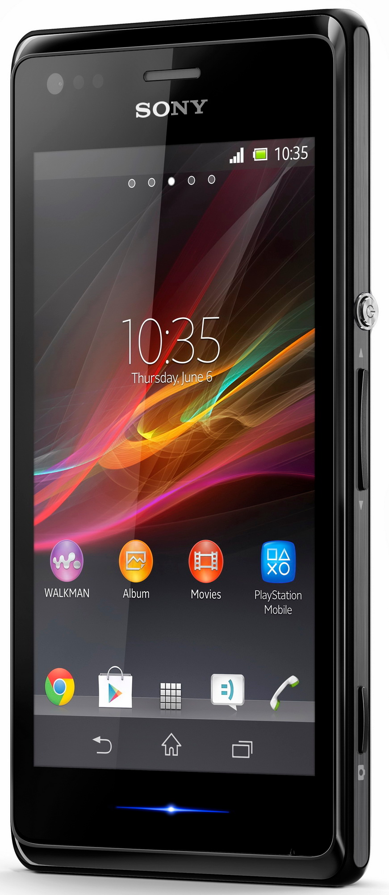

Sony Xperia M (sony-nicki)
Jump to navigation
Jump to search
|
 Sony Xperia M | |
| Manufacturer | Sony |
|---|---|
| Name | Xperia M |
| Codename | sony-nicki |
| Released | 2013 |
| Category | testing |
| Original software | Android 4.1.x, kernel 3.4.0 |
| Hardware | |
| Chipset | Qualcomm MSM8227 Snapdragon S4 Plus |
| CPU | Dual-core 1.0 GHz Krait |
| GPU | Adreno 305 |
| Display | 4", 480x854 px |
| Storage | 4 GB |
| Memory | 1 GB |
| Architecture | armv7 |
| Unixbench Whet/Dhry score | 371.8 |
{kind=link}
| USB Networking |
Works
|
|---|---|
| Flashing |
Works
|
| Touchscreen |
Works
|
| Display |
Works
|
| WiFi | |
| FDE |
Works
|
| Mainline |
Partial
|
| Battery |
Partial
|
| 3D Acceleration | |
| Audio | |
| Bluetooth | |
| Camera | |
| GPS | |
| Mobile data | |
| SMS | |
| Calls | |
| USB OTG | |
| NFC | |
| Accelerometer | |
|---|---|
| Magnetometer | |
| Ambient Light | |
| Proximity | |
| Hall Effect | |
| Ir TX | |
|---|---|
| TrustZone | |
Contributors
- Konrad Dybcio (@konradybcio)
Device owners
- ImAdam
- Knuxfanwin8 (Notes: not in use/development)
- Zekiu (Notes: C1905; broken. no display, holding power button causes the phone to vibrate constantly; vendor: "orange")
How to enter flash mode
With device powered off, hold [VOLUME +] and plug USB cable in. Device's LED will turn blue, meaning it has entered fastboot mode.
Installation
Works with both pmbootstrap flasher and TWRP zip. No errors were found in that process.
If using a large rootfs (like with plasma-mobile) fastboot with throw a "no space left on device" error. Flashing as a .zip with TWRP solves the problem.
Additional info
Partition list
| Device | Label | Size in blocks |
|---|---|---|
| mmcblk0p1 | TA | 2048 |
| mmcblk0p2 | sbl1 | 128 |
| mmcblk0p3 | sbl2 | 256 |
| mmcblk0p4 | s1sbl2 | 256 |
| mmcblk0p5 | sbl3 | 512 |
| mmcblk0p6 | aboot | 512 |
| mmcblk0p7 | tz | 512 |
| mmcblk0p8 | alt_sbl1 | 128 |
| mmcblk0p9 | alt_sbl2 | 256 |
| mmcblk0p10 | alt_s1sbl2 | 256 |
| mmcblk0p11 | alt_sbl3 | 512 |
| mmcblk0p12 | alt_aboot | 512 |
| mmcblk0p13 | alt_tz | 512 |
| mmcblk0p14 | rpm | 512 |
| mmcblk0p15 | alt_rpm | 512 |
| mmcblk0p16 | LTALabel | 16384 |
| mmcblk0p17 | boot | 20480 |
| mmcblk0p18 | modem | 65536 |
| mmcblk0p19 | modemst1 | 3072 |
| mmcblk0p20 | modemst2 | 3072 |
| mmcblk0p21 | fsg | 3072 |
| mmcblk0p22 | ramdump | 5120 |
| mmcblk0p23 | FOTAKernel | 16384 |
| mmcblk0p24 | persist | 4096 |
| mmcblk0p25 | system | 1228800 |
| mmcblk0p26 | cache | 256000 |
| mmcblk0p27 | data | 2183151 |
See also
- !1611 Initial merge request
- display hack (needs to be reworked in the future to make it compatible with a display manager)
- Mainline kernel notes
- Device package
- Kernel package